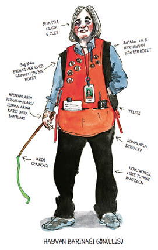

3
Hayvan barınağı hapishaneye benziyordu. Uzun beton koridorları ve kapanırken şangır şungur öten ağır kapıları vardı. Neşeli bir gönüllü çalışan bana eşlik etti. Koltuk değneklerim, zemini döven çekiç darbeleri gibi ses çıkarıyordu.
Gönüllü beni duvarlara kafeslerin dizili olduğu kedi odalarına götürdü ve ben teker teker her kafese bakarken biraz geri çekildi.
“Tibby?” diye fısıldadım. Erişkin kediler kafeslerin arka tarafına sinmişti, kıpırdamadan baktılar bana. Yavrular öne yanaştı, ama kuyrukları sarkık, gözleri şaşkınlık doluydu. “Çok üzgünüm,” dedim her birine. “Keşke sizi eve götürebilseydim.”
Üç günde bir barınağa gidiyordum, üç günde bir de aynı şeyler oluyordu. Anlayışlı gülümsemesi ve canlı sesiyle bir gönüllü beliriyordu.
“Kedimi kaybettim,” diye sızlanıyordum. “İri, utangaç bir kedi. Islak uzaylı gözleri var. On beş… yirmi bir… otuz üç gün önce kayboldu.”
Neşeli gönüllüler bilmiş bilmiş, “Ah kediler,” diye cevap veriyor, bana umut dolu hikayeler anlatıyorlardı. Herkes umutlu hikayelerle doluydu. Günlerce, haftalarca, aylarca ortadan kaybolduktan sonra eve dönen kediler vardı. İki yıl sonra, dört bin beş yüz kilometre uzakta bulunan kediler vardı. Hristiyanlığa yeni dönen insanların coşkusuyla dinliyordum. Anlaşılan, gönüllülerde benim kaybettiğim ya da belki de hiç sahip olmadığım bir çeşit büyücülük, parlak gülümsemelerinin arkasında yatan duygusal bir sağlamlık vardı. Yoksa bütün bu kedi acılarına nasıl dayanacaklardı ki?
“Alışıyorsun,” dedi biri.
“O kadar da kötü değil,” dedi bir diğeri.
Turuncu iş önlükleri giyiyor, ayaklarına da mavi kağıt ayakkabılar geçiriyorlardı. Kafesleri temizliyor, telsizlerle konuşuyor, kediler oynasın diye uçlarına tüyler takılmış sırıklar taşıyorlardı. Mütevazı, sabırlı gülümsemeleri, mavi kağıtların içindeki ayakları, kalın kabukları olan yumuşak kalpleri dolayısıyla onları sevmeye başlamıştım. O nedenle kedi cesareti hikayelerini kulağımı dört açarak dinliyor, sonra eve gidip ağlıyordum.

Medyuma yeniden e-posta gönderdim. Kadın, Tibby hâlâ iyi, diye cevap verdi. Küçülen ayla birlikte dönecek. Ben de bir kez daha onun iyimserliğine, altıncı hissinin bilgeliğine, saç kesiminin güzelliğine sarıldım. Ama ay küçülüp yok oldu, Tibby görünmedi.
Derken yavaş yavaş anladım. Tibby gibi bir kedi şehir cangılında hayatta kalamazdı. Çok utangaç, çok ürkekti, kent yaşamına ayak uyduracak beceriden yoksundu ve kimseyi pataklayacak güce sahip değildi. Eve dönmediyse, bunun tek sebebi olabileceği gerçeğiyle yüzleşmek zorundaydım: Korkunç bir şey olmuştu.
Sonra, kayboluşunun üstünden beş hafta geçmişken, Tibby geri döndü.